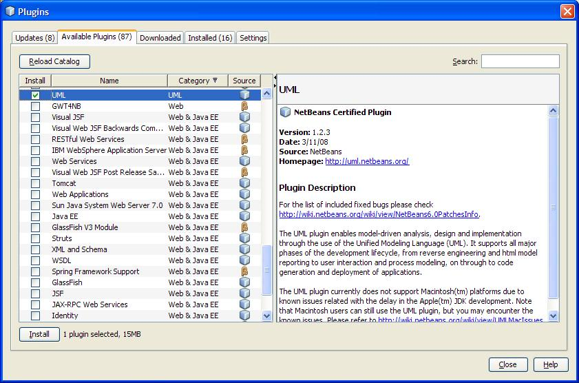

NetBeans UML Plugin
This webpage describes the process to install the UML plugin with
NetBeans.
1) Start up NetBeans
2) Click Tools / Plugins
3) Click Available Plugins Tab in the Plugins Frame
4) Look for UML and Select

5) Click the Install button in
the Plugins Frame
6) Once the UML Plugin has been installed exit the Plugins Frame
Go here for the tutorial on UML: http://www.netbeans.org/kb/60/uml/index.html
For all tutorials and information on NetBeans: Click Help ->
Start Page or go to: http://www.netbeans.org/